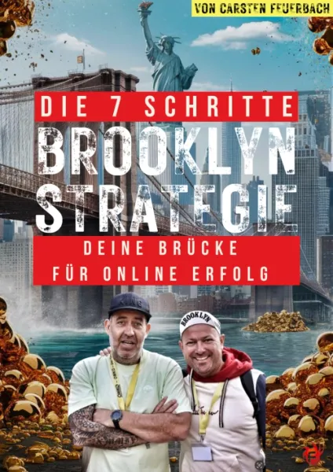
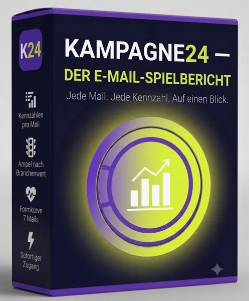

Die 7 Schritte Brooklyn-Strategie
Produktprofil · Marktplatz-Daten 2026-10-14 · Verkaufsseiten-Recherche 2026-10-14 · Kategorien: Online Marketing & E-Business, Education, Email Marketing
- Die 7 Schritte Brooklyn-Strategie ist ein/e E-Book in Online Marketing & E-Business und Education, vertrieben über den Digistore24-Marktplatz von Anbieter carstenfeuerbach, gelistet seit 2024-08-29.
- Listenpreis $7.88 (single payment) — Checkout, Auslieferung und Rückerstattungen laufen über Digistore24 selbst, nicht über den Anbieter.
- Käuferschutz: keine standardisierte Garantie-Formulierung gefunden — Rückerstattungsbedingungen vor der Zahlung auf der offiziellen Seite prüfen.
Interesse an Die 7 Schritte Brooklyn-Strategie? Aktueller Preis, Boni und Garantiebedingungen finden Sie auf der offiziellen Seite des Anbieters:
Offizielle Verkaufsseite ansehen
Affiliate-Link (Werbung) — wir verdienen ggf. eine Provision, ohne Mehrkosten für Sie.

Marktplatz-Daten
| Produkttyp | E-Book |
|---|---|
| Preis | $7.88 (Single payment) |
| Garantie/Rückgabe | Laut Verkaufsseite des Anbieters — vor dem Kauf auf der offiziellen Seite prüfen |
| Anbieter | carstenfeuerbach (gelistet seit 2024-08-29) |
Marktplatz-Beschreibung des Anbieters
Fette Provisionen mit der bombösen 7-Schritte-Brooklyn-Strategie von Carsten Feuerbach Provision: Bis zu 294,59 € pro Sale, inklusive Upsells! Start: Ab sofort. Direkt loslegen! >> Jetzt Partner werden Inhalt: Die 7-Schritte-Brooklyn-Strategie ist der ultimative Game-Changer für Affiliate-Marketer, die mit einer klaren, strukturierten Strategie durchstarten wollen. Mit diesem eBook erhältst du eine Schritt-für-Schritt-Anleitung, wie du im Affiliate-Marketing erfolgreich wirst, ohne eigene Produkte oder das Zeigen deines Gesichts. Perfekt für Anfänger und Fortgeschrittene! Details: Preis: 4,99 € Umfassende Strategie für den schnellen Erfolg im Affiliate-Marketing Fokus auf Mindset und Disziplin, die Grundlage für dauerhaften Erfolg Upsells mit exklusiven Inhalten, die deinen Profit maximieren Zielgruppe: Anfänger im Affiliate-Marketing Menschen, die sich ein Nebeneinkommen aufbauen möchten Ideal für Hausfrauen, Rentner, Studenten, Nebenberufliche und Menschen ohne Vorkenntnisse Deine Vorteile als Partner: Hohe Provisionen: 50% auf das Produkt und alle Upsells Schnelle Abrechnung über Digistore24 Maximale Sichtbarkeit durch das exklusive OneCockpit Leaderboard Hohe Conversion-Rate und extrem niedrige Stornoquote Exklusive Partner-Betreuung und regelmäßige Updates Zugang zu Werbematerialien und speziellen Wettbewerben Bereits nach wenigen Tagen kannst du mit den fetten Provisionen durchstarten! >> Jetzt Partner werden Besonderheiten als Partner: Exklusive Partnerbetreuung Regelmäßige Updates und neue Werbemittel Sonder-Wettbewerbe mit einzigartigen Sachpreisen und Prämien Jetzt Partner werden und mit der 7-Schritte-Brooklyn-Strategie bomböse Provisionen verdienen! Weitere Infos & Produkte unter: https://go.carstenfeuerbach.de/partnerprogramm
Von der Verkaufsseite des Anbieters
Seitentitel: Brooklyn Strategie
Hauptüberschrift
Wie ich in nur 17 Minuten 1.328€ verdient habe!
Du erfährst heute, wie du mit einer klaren Schritt-für-Schritt-Strategie dein Online-Business starten kannst, auch wenn du keine Ahnung hast, keinen Cent in der Tasche und dir Technik-Kram komplett auf die Nerven geht.
Du erfährst heute, wie du mit einer klaren Schritt-für-Schritt-Strategie dein Online-Business starten kannst, auch wenn du keine Ahnung hast, keinen Cent in der Tasche und dir Technik-Kram komplett auf die Nerven geht.
Einstiegstext
Sie lachten, als ich sagte, ich würde in nur 17 Minuten über 1.300 €uro verdienen. Heute fragen sie mich, wie ich das gemacht habe.
Du erfährst heute, wie du mit einer klaren Schritt-für-Schritt-Strategie dein Online-Business starten kannst, auch wenn du keine Ahnung hast, keinen Cent in der Tasche und dir Technik-Kram komplett auf die Nerven geht.
Ich zeige dir den Weg, den ich selbst gegangen bin. Ohne Kamera. Ohne Startkapital. Ohne Vorkenntnisse. Aber mit einem klaren Plan. Und dieser Plan heißt: Brooklyn-Strategie.
Für dich, wenn du keine Lust mehr auf leere Versprechen hast, sondern echte, erprobte Strategien willst.
Fragen, die die Verkaufsseite beantwortet
- Für wen ist die Brooklyn-Strategie?
- Was bekommst du genau?
- Was ist dir dieses Wissen wert?
Recherche-Methode: rohes HTML · 1514 Wörter · Qualität: rich · recherchiert am 2026-10-14. Vollständige Recherche-Datei (MD) ↗
Wie Produkte dieser Art geliefert werden
Allgemeiner Hinweis zu diesem Produkttyp (keine anbieterspezifische Anleitung): E-Books auf Digistore24 werden als digitaler Download geliefert (meist PDF/EPUB): direkt nach dem Checkout erhalten Sie einen Downloadlink oder Mitgliederzugang und können auf jedem Gerät lesen. Für die genaue Anwendung von Die 7 Schritte Brooklyn-Strategie sind die offizielle Verkaufsseite und die enthaltenen Materialien maßgeblich.
Gut zu wissen
- Keine Garantie-Formulierung in unserer Recherche gefunden — bestätigen Sie das Rückgabefenster auf der offiziellen Seite, bevor Sie kaufen.
Was ist Die 7 Schritte Brooklyn-Strategie?
Die 7 Schritte Brooklyn-Strategie ist ein/e e-book in der Kategorie Online-Marketing & E-Business des Digistore24-Marktplatzes, veröffentlicht von Anbieter carstenfeuerbach und im Verkauf seit 2024-08-29. Der Anbieter beschreibt es so: "Fette Provisionen mit der bombösen 7-Schritte-Brooklyn-Strategie von Carsten Feuerbach Provision: Bis zu 294,59 € pro Sale, inklusive Upsells! Start: Ab sofort. Direkt loslegen! >> Jetzt Partner werden Inhalt: Die 7-Schritte-Brooklyn-Strategie ist der ultimati" (Marktplatz-Beschreibung des Anbieters, leicht gekürzt).
Die 7 Schritte Brooklyn-Strategie Preis: was Sie zahlen
Der Marktplatz listet Die 7 Schritte Brooklyn-Strategie zum $7.88 Preis (single payment). Digistore24 fügt im Checkout die gesetzliche Steuer Ihres Landes hinzu — dort sehen Sie den Endbetrag vor der Zahlung. Eine separate Plattformgebühr gibt es nicht; Anbieter können eigene Upsells nach dem Checkout anbieten.
Die 7 Schritte Brooklyn-Strategie Rückerstattung und Geld-zurück-Garantie
Wir haben keine standardisierte Garantie-Formulierung auf der Verkaufsseite gefunden. Rückerstattungen für Digistore24-Käufe laufen über die Plattform: Antrag über den Support-Link in Ihrer Bestell-E-Mail, innerhalb des Garantiezeitfensters, das im Checkout angezeigt wird. Praktischer Rat: Entscheiden Sie innerhalb des Fensters — wenn das Produkt unter den Erwartungen bleibt, erstatten lassen statt irren lassen.
Mechanik im Detail: So funktionieren Digistore24-Rückerstattungen.
Für wen ist Die 7 Schritte Brooklyn-Strategie geeignet?
Basierend auf der Online-Marketing & E-Business-Einordnung und der single payment-Abrechnung richtet sich Die 7 Schritte Brooklyn-Strategie an Käufer, die online-marketing & e-business-Lösungen suchen zum Einstiegspreis. Der ehrliche Test ist nicht die Kategorie, sondern Ihre eigene Situation: Werden Sie es realistisch innerhalb des Garantiefensters nutzen? Wenn ja, ist der Preis eine Investition; wenn nein, ist er Ballast — unabhängig von der Qualität.
Ist Die 7 Schritte Brooklyn-Strategie seriös? Was Sie vor dem Kauf prüfen
Wir bewerten keine Seriosität — das kann niemand, ohne das Produkt zu nutzen. Prüfbare Punkte, alle auf dieser Seite: die Marktplatz-Historie des Anbieters (im Verkauf seit 2024-08-29), die wörtlichen Verkaufsseiten-Auszüge unten (gekennzeichnet als Anbieteraussagen — deren Werbung, nicht unsere Empfehlung), die Garantiebedingungen im Checkout und die Auslieferungsart. Vorsichtsignale bei jedem Angebot: Countdown-Dringlichkeit gepaart mit vagen Rückerstattungsbedingungen, Testimonials ohne Datum und Anbieterseiten, die den Preis bis zum Checkout verstecken.
Wie kommen Sie nach dem Kauf an Die 7 Schritte Brooklyn-Strategie?
Der Checkout läuft über Digistore24. Nach der Zahlung: E-Books auf Digistore24 werden als digitaler Download geliefert (meist PDF/EPUB): direkt nach dem Checkout erhalten Sie einen Downloadlink oder Mitgliederzugang und können auf jedem Gerät lesen. Bewahren Sie die Bestell-E-Mail auf — sie ist Ihr Schlüssel zum/d zur e-book, zu Rückerstattungsanträgen und zum Digistore24-Käufersupport.
Die 7 Schritte Brooklyn-Strategie Erfahrungen: so recherchieren Sie richtig
Die meisten „Erfahrungsberichte" zu Marktplatz-Produkten sind Affiliate-Inhalte — einschließlich Seiten wie dieser, die an Käufen mitverdienen. Behandeln Sie jeden Bericht (auch unseren) als Ausgangspunkt und prüfen Sie gegen Primärquellen: die Verkaufsseite des Anbieters, die Digistore24-Rückerstattungsrichtlinie und — für online-marketing & e-business — unabhängige Communities außerhalb des Affiliate-Ökosystems. Auf dieser Seite sind die Verkaufsseiten-Auszüge unten wörtlich zitiert, damit Sie die Aussagen des Anbieters bewerten können, ohne wegzuklicken.
Wie Sie Die 7 Schritte Brooklyn-Strategie sicher kaufen
- Öffnen Sie die offizielle Verkaufsseite und lesen Sie das vollständige Angebot.
- Bestätigen Sie Endpreis und Garantiezeitfenster auf der Digistore24-Kassenseite — sie ist bindend, kein Vergleichsportal.
- Zahlen Sie innerhalb des Digistore24-Checkouts (niemals per Überweisung oder Off-Platform-Links).
- Speichern Sie die Bestellbestätigung; notieren Sie die Rückerstattungsfrist im Kalender.
- Prüfen Sie zügig. Der Digistore24-Käufersupport hilft, wenn der Anbieter nicht reagiert.
Vollständiges Recherche-Archiv für dieses Produkt (Markdown: kompletter Marktplatz-Datensatz + wörtliche Verkaufsseiten-Auszüge): Die 7 Schritte Brooklyn-Strategie — Datenarchiv (.md).
- Listenpreis & Abrechnung — Quelle: offizielle Digistore24-Marktplatz-API, Stand 2026-10-14. Maßgeblich für den aktuellen Preis ist immer die Kassenseite.
- Verkaufsseiten-Zitate — Quelle: https://q16jd1.eu-2.quentn-site.com/brooklyn-strategie-1, abgerufen 2026-10-14 (Methode: rohes HTML). Verify: offizielle Seite öffnen.
- Garantie / Rückgabe — vom Anbieter festgelegt; vor dem Kauf auf der Verkaufsseite bestätigen.
- Nicht von uns geprüft: Produktqualität, Ergebnisse, Testimonials — kein Praxistest für dieses Listing durchgeführt.
Häufige Fragen zu Die 7 Schritte Brooklyn-Strategie
Antworten aus dem Marktplatz-Snapshot (2026-10-14) und der Verkaufsseiten-Recherche (2026-10-14); Anbieteraussagen sind inline gekennzeichnet.
Was ist Die 7 Schritte Brooklyn-Strategie?
Die 7 Schritte Brooklyn-Strategie ist ein Angebot des Typs „E-Book" im Digistore24-Marktplatz, Anbieter: carstenfeuerbach, gelistet seit 2024-08-29. Eingepflegt unter Online-Marketing & E-Business und Bildung. Digistore24 wickelt Checkout, Lieferung und Rückgaben ab.
Wie viel kostet Die 7 Schritte Brooklyn-Strategie?
Der Digistore24-Marktplatz listet es für $7.88 (single payment). Preise legt der Anbieter fest und können sich ändern — der Marktplatz-Eintrag oben zeigt den Schnappschuss; die offizielle Verkaufsseite zeigt den aktuellen Preis.
Gibt es eine Geld-zurück-Garantie für Die 7 Schritte Brooklyn-Strategie?
Unsere Verkaufsseiten-Recherche hat keine explizite Garantie-Formulierung gefunden. Viele Digistore24-Produkte bieten 60 Tage Geld-zurück, aber das legt jeder Anbieter selbst fest — bestätigen Sie es auf der offiziellen Verkaufsseite, bevor Sie kaufen.
Ist Die 7 Schritte Brooklyn-Strategie seriös?
Wir bewerten keine Seriosität — wir veröffentlichen überprüfbare Zahlen: Anbieter carstenfeuerbach (gelistet seit 2024-08-29), mit der vollständigen Verkaufsseiten-Recherche archiviert auf dieser Seite (Anbieteraussagen als solche gekennzeichnet). Lesen Sie unsere 6-Punkte-Bewertungsmethode und entscheiden Sie anhand der Zahlen — oder diskutieren Sie Die 7 Schritte Brooklyn-Strategie auf GitHub.
Wo kann ich Die 7 Schritte Brooklyn-Strategie sicher kaufen?
Nur über die offizielle Verkaufsseite, die auf dieser Seite verlinkt ist (Checkout und Rückgaben laufen über Digistore24). Prüfen Sie dort Preis und Garantie vor der Bestellung. Der Link ist ein Affiliate-Link — der Kauf unterstützt diese Website ohne Mehrkosten für Sie.
Wie erhalte ich Die 7 Schritte Brooklyn-Strategie nach der Zahlung?
Der Checkout läuft über Digistore24: Nach der Zahlung erhalten Sie Ihren Zugang oder Download per E-Mail und in Ihrem Digistore24-Kundenkonto. Lieferdetails für diesen Produkttyp: E-Books auf Digistore24 werden als digitaler Download geliefert (meist PDF/EPUB): direkt nach dem Checkout erhalten Sie einen Downloadlink oder Mitgliederzugang und können auf jedem Gerät lesen. Bei Problemen kann der Digistore24-Käufersupport Ihre Bestellung wiederherstellen.
Alle 50 Käuferfragen zu Online-Marketing & E-Business — das komplette Kategorie-FAQ.
Die 7 Schritte Brooklyn-Strategie auf Reddit diskutieren
In Community-Threads vergleichen echte Käufer Erfahrungen. Wir verlinken Communities, keine einzelnen Posts — Threads verschwinden, Subreddits bleiben:
- r/Unternehme — deutschsprachige Community mit Diskussionen zu online marketing & e-business.
- r/Vertrieb — deutschsprachige Community mit Diskussionen zu online marketing & e-business.
- Reddit-Suche nach „Die 7 Schritte Brooklyn-Strategie" — Live-Ergebnisse, von uns nicht beeinflusst.
- Top-„Erfahrungs"-Treffer dieses Jahr — selbst nach Aktualität filtern.
Passendes auf Amazon.de
Physische Produkte und Zubehör, die häufig zusammen mit Die 7 Schritte Brooklyn-Strategie gekauft werden:
- Marketing Bücher auf Amazon.de — Top-Ergebnisse, Amazon-Ranking.
- Bestseller: Marketing Bücher — live Liste von Amazon, von uns nicht kuratiert.
Werbung: Als Amazon-Partner verdient DigistorePicks DE an qualifizierten Käufen (Partner-tag adminstorede-21). Amazon setzt eigene Preise und Provisionen (niedrige einstellige Prozente — weit unter den 30–75% der Digistore24-Anbieter). Amazon ist ein Convenience-Angebot für Sachprodukte, kein Ersatz für das digitale Produkt oben.
Ähnliche Angebote in Online-Marketing & E-Business

SHOWUP 3 Monate Strategie- und Umsetzungsbegleitung für dein Business. Du steckst Zeit und Arbeit in deinen Content, feilst an Angeboten und denkst über deine P

Bis zu 1.046 € Provision pro Empfehlung — mit einem Produkt, das sich von selbst verkauft. Stell dir vor, du empfiehlst ein Produkt, das nicht nur gut konvertie

Verdiene 50% Provision mit der #1 Masterclass für Online-Kurs-Business Promote das kostenlose Online Training „Online Kurse erstellen und passiv verkaufen mit K

Das ist die mächtigste Social-Media-Kooperation, die der deutschsprachige Raum jemals gesehen hat. Wenn die TikTok-Ikone Social Media Buddy , der den Algorithmu
Weitere Angebote von carstenfeuerbach

Fette Provisionen mit dem bombösen "FEUERBACH´S TWELVE" Videotainmentkurs Provision: 50% auf alle Angebote (maximal 210,75€ pro Sale) Start: Kann sofo
Fette Provisionen mit dem Kampagne24-Promo-Kalender von Carsten Feuerbach Behalte alle geplanten Launches und Promotions auf einen Blick, mit automatisch generi

Fette Provisionen mit dem Kampagne24-E-Mail-Spielbericht von Carsten Feuerbach Trag deine Kennzahlen pro E-Mail-Versand ein, den Rest rechnet der Spielbericht a

Bewerbe noch heute das exklusive kostenlose E-Book: "Der Headline Generator" - Die "Yellow-Press-Methode" (klick) DIE MACHT EINER PACKENDEN
Die 7 Schritte Brooklyn-Strategie ist auch gelistet in
Bildung (597 Produkte) · E-Mail-Marketing (137 Produkte)
Ähnliche Preislage in Online-Marketing & E-Business

Produktinfos Video Anleitung: Das Training, wie ich 1000 YouTube Abos knackte und über 500€ im Monat online verdiene. Vorteile für dich als Affiliate ✔ Hilft je

Produktinfos Online-Kurs: Die Anleitung die mir von 0€ half bis zu 226€ Provision am Tag zu verdienen. Vorteile für dich als Affiliate ✔ Hilft jedem beim Online

Passives KI Affiliate Marketing 2025 – Low-Budget Funnel mit High-Price Backend & 50 % Provision Jetzt Affiliate werden und von einem bewährten Low-Budget-F

Affiliate Quiz AI – Launch-Angebot Verwandle Links in Erlebnisse. Hör auf, nackte Affiliate-Links zu verbreiten, die ignoriert oder gesperrt werden. Erstelle in
Ähnliche Suchanfragen
Wo Sie es sich ansehen können
Wo Sie es sich ansehen können
Aktuelle Preise, Garantie und Boni finden Sie auf der offiziellen Verkaufsseite:
Offizielle Verkaufsseite ansehen
Das ist ein Affiliate-Link (Werbung) — kaufen Sie darüber, verdienen wir ggf. eine Provision, ohne Mehrkosten für Sie.
Quellen & weiterführende Informationen
- Offizielle Verkaufsseite (aktueller Preis, Garantie, Boni): q16jd1.eu-2.quentn-site.com/brooklyn-strategie-1 (Affiliate-Link)
- Öffentliche Digistore24-Produktseite: checkout-ds24.com/product/567558
- Vollständige Recherche-Datei (Markdown, versioniert): content/products/51046-die-7-schritte-brooklyn-strategie.md
- Affiliate-Supportseite des Anbieters: go.carstenfeuerbach.de/partnerprogramm
- Marktplatz-Kategorie: Online-Marketing & E-Business
Wie wir Produkte wie Die 7 Schritte Brooklyn-Strategie bewerten
Sechs Prüfungen, ausschließlich mit offiziellen Marktplatz-Zahlen. Die vollständige Bewertungsmethode lesen · unsere Recherche-Standards & Kennzeichnung.
Fragen oder eigene Erfahrungen mit Die 7 Schritte Brooklyn-Strategie?
Praxis-Tests veröffentlichen wir erst, nachdem wir ein Produkt selbst gekauft haben — aber Ihre Erfahrung hilft anderen Lesern: Diskussion zu Die 7 Schritte Brooklyn-Strategie auf GitHub starten/verfolgen. Falsche Zahl gefunden? Korrektur melden — jede Seite zeigt ihre Datenstände, Korrekturen gelten für die ganze Website.